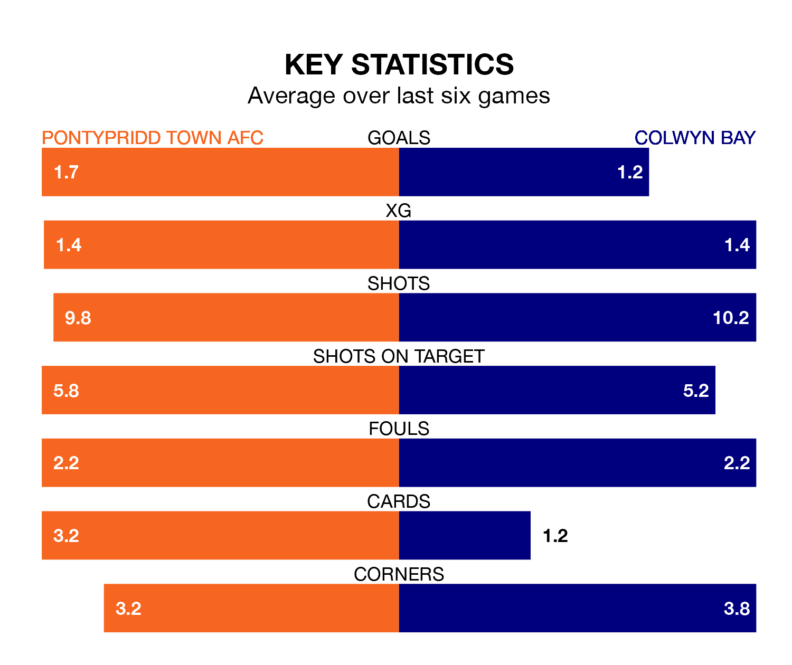

The Welsh Premier League's top two sides face each other at Ynysangharad Park in Saturday lunchtime's kick-off, when zero-placed Pontypridd Town AFC host zero-placed Colwyn Bay.
Pontypridd Town have picked up six wins and five draws from 24 games so far this season, and sit six points above the visitors going into the 12.15pm match.
Colwyn Bay, meanwhile, have won five and drawn two, picking up 17 points.
With 17 goals in 24 games so far this season, Pontypridd Town are the league's-5th-lowest scorers with 0.7 goals per game. But they are conceding fewer than average too, letting in 32 goals at a rate of 1.3 per game.
Colwyn Bay are also below average scorers, with 1.2 goals per game, compared to a league average of 1.5. They have conceded 2.1 goals per game.
The Dragons are in mixed form in the Welsh Premier League, with three wins and a draw from their last six games.
With a win and five losses over that period, the away side's form is much worse – they have taken three points from 18, compared to the hosts' 10.
Over the last two years, Pontypridd Town and Colwyn Bay have played each other twice. They won one each.
Their last meeting was on January 13, when Pontypridd Town won 3-2 away.
Pontypridd Town's last match was on February 9, a 1-1 draw against Haverfordwest County, with Ben Ahmun getting the goal for the Dragons.
Colwyn Bay beat Aberystwyth Town 1-0 last time out, also on February 9, with Matthew Hill on the scoresheet.
Updated: 13:04 (UTC), 16/02/24